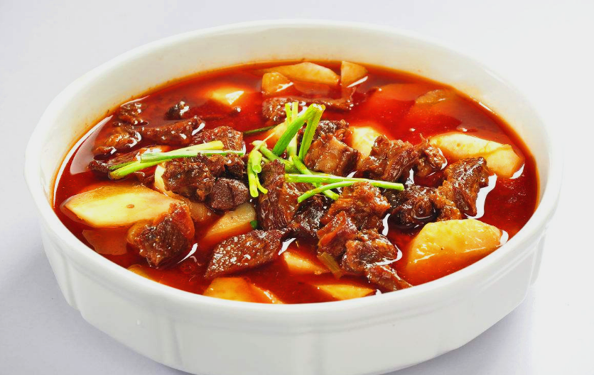
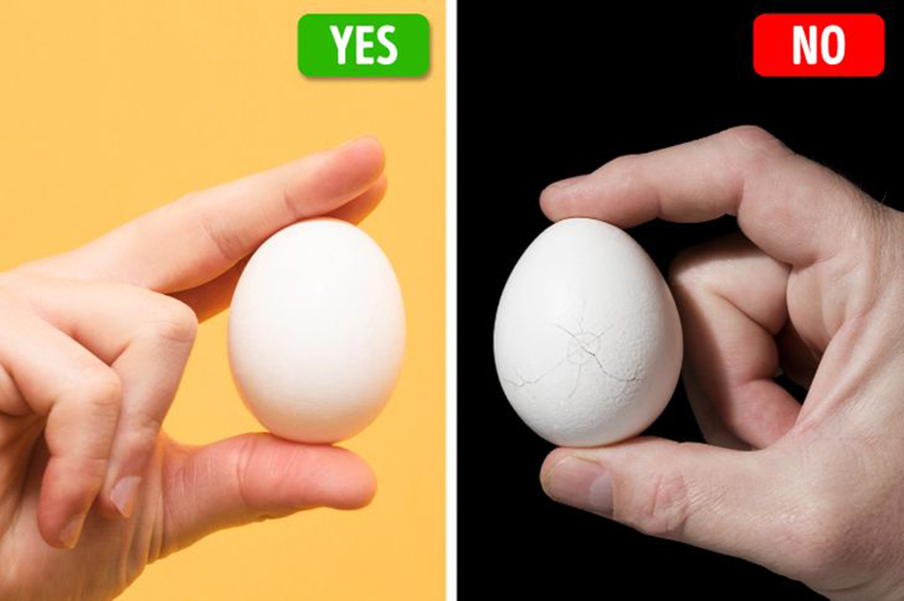
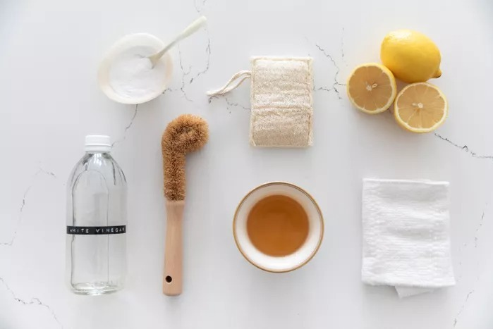
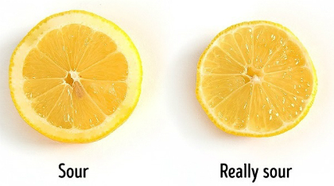
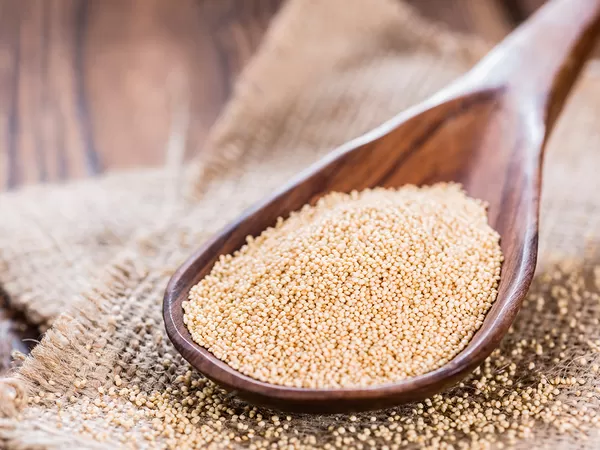
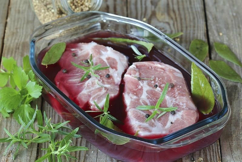
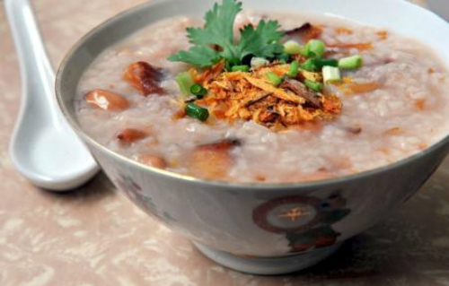

Mẹo, thủ thuật và kĩ thuật

Chỉ cần nắm vững những kĩ năng này, trình nấu nướng của bạn sẽ được nâng cấp, dù thực tế bạn không quá thích vào bếp hay nấu ăn giỏi

Với 10 mẹo nhận biết dưới đây, bạn dễ dàng loại bỏ những loại thực phẩm không an toàn

Tần suất làm sạch sẽ phụ thuộc vào tần suất sử dụng ấm nước của bạn.Bên ngoài nên được lau loại bỏ các vết ố và bẩn tung tóe ít nhất một lần một tuần

Cắt lát chanh càng mỏng, bạn sẽ cắt được lát chanh càng chua
Cho người đầu bếp mới bắt đầu, 6 sai lầm nấu ăn phổ biến mà mọi người thường mắc phải và cách mà bạn có thể tránh chúng

Nếu bạn muốn bổ sung thêm nhiều ngũ cốc nguyên cám vào chế độ ăn uống thì bạn có thể tìm hiểu hướng dẫn nấu ăn với ngũ cốc đơn giản này

Những thủ thuật này được các đầu bếp có thâm niên đúc kết ra, có thể chữa thịt dai trở nên mềm mại, ngon tuyệt

Cho gạo đã vo sạch để qua đêm sẽ giúp nấu cơm hoặc cháo đỡ dính và nhanh hơn